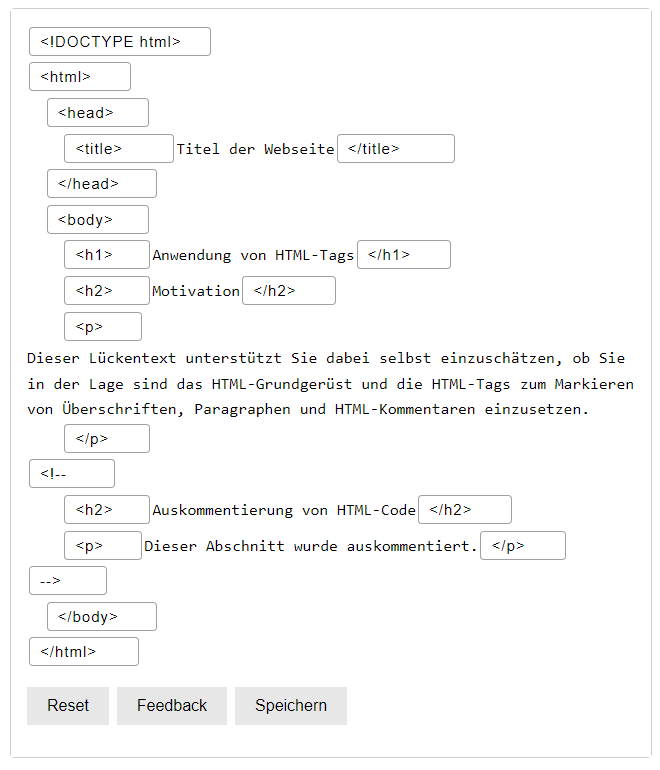

Mit welchen fachlichen Argumenten
wurde das WWW-Proposal von Tim Burners Lee abgelehnt?
es sei eine mathematische Rigorosität
die broken links seien ein großes problem
verteilten texte seien nicht gewollt, es seien lieber verteilte Objekte bevorzugt
es sollten Objekt Protokolle statt Text Protokolle verwendet werden.
das Konzept von Tim Burners Lee wäre ein wissenschaftlicher Rückschritt gewesen
Was sind die fachlichen Argumente, warum das WWW dennoch ein Erfolg wurde?
Dezentralisierung
orthogonale Technologien, die unabhängig voneinander weiterentwickelt werden konnten
weltweit eindeutige Identifikation der URL
rein text basierendes Protokoll, und zwar HTTP
hypertext HTML
Was wäre der Preis für die garantierte Verhinderung von "broken links"?
Ein enormer aufwand, denn um sicherzustellen, dass alle verwendeten hyperlinks zu einem ziel
führen würde vor allem bei großen Projekten und integrierten websites alle verwendeten links regelmäßig überprüft werden müssen.
HTTP
Sie bekommen im Browser den HTTP Status Code 200. Was bedeutet das?
anfrage, war erfolgreich und angefragte Dateien sind enthalten
Sie bekommen im Browser den HTTP Status Code 301. Was hat das zu bedeuten?
die angefragte Ressource wurde dauerhaft auf eine neue URL verschoben
Sie bekommen im Browser den HTTP Status Code 400. Was hat das zu bedeuten? Was können Sie dagegen tun?
Die Anfrage des client ist ungültig oder fehlerhaft. Die angefragte URL sollte
auf ihre korrektheit überprüft werden
Sie bekommen im Browser den HTTP Status Code 403. Was hat das zu bedeuten? Was können Sie dagegen tun?
der server verweigert der Zugriff auf die angefragte Ressource, da client keine hinreichende Zugriffsrechte hat.
Man sollte die berechtigung ersuchen z.B. aktivieren des VPN clients oder eine Nutzername-Passwort eingabe.
n einer Webanwendung benötigen Sie eine OPTIONS-Anfrage, die die Optionen des Servers vor dem eigentlichen
Zugriff erfragen soll. Aus Performancegründen soll die Abfrage aber cacheable sein. Wie könnten Sie dafür
eine Lösung angehen?
die Cachebarkeit der OPTIONS-Anfrage steuern durch HTTP-Header Cache-Control. Zusätzlich setzt man
den Header auf public und legt eine max Cache Dauer durch max-age fest.
Lückentext zu HTML

HTML-Literatur lesen und Fragen beantworten
Was ist HTML?
HTML ist eine auszeichnungssprache die für die Strukturierung digitaler Elemente verwendet wird
Wie kann man eine geschachtelte geordnete Liste der Tiefe 3 erzeugen?
man verwendet <ul> und <li>. Für geschachtelte listen fügt man innerhalb der liste nochmal <ul> und <li>
ein und so erhält man innerhalb der Liste eine neue liste. Dies wiederholt man noch einmal und dann
erhält man eine liste der Tiefe 3.
Wie ist eine HTML-Tabelle aufgebaut?
Tabellen beginnen mit dem tag <table>, darauf folgt <tr> für die erste spalte. <th> ... </th> wird verwendet
für die einzelnen Einträge innerhalb der spalte. Die Spalte wird mit </tr> geschlossen und mit <tr> wird eine
neue unterhalb der vorherigen eröffnet, die gleichermaßen mit Einträgen gefüllt sein kann.
Welche Konventionen sollte man bei Pfaden und Dateinamen beachten?
vermeiden von Leerzeichen und Sonderzeichen. Verwende konsistente Schreibweisen für Pfade und Dateinamen.
Wie baut man in HTML ein Menü?
Ein Menü kann durch eine Liste realisiert werden, dessen Inhalte aus <a href=...</> hyperlinks zu
anderen teilen des website führen können.
Welche Attribute sollte man bei Bildern wie verwenden?
Man sollte bei Bildern auf jeden fall <img src="dateipfad" alt="alternativTextFürBild"> ggf.
kann man noch width and height anpassen.